22. Workflow Job Templates
A workflow job template links together a sequence of disparate resources that accomplishes the task of tracking the full set of jobs that were part of the release process as a single unit. These resources may include:
job templates
workflow job templates
project syncs
inventory source syncs
approvals
management jobs
Open Automation Execution > Templates. The Automation Templates list shows the job templates and workflow job templates you can see, with their type, labels, organization and when they last ran. Expand a row with the arrow next to it to see more details. The list is sorted by name, but you can sort by other criteria, or search by various fields and attributes of a template.
Workflow job templates have View workflow visualizer (graph icon) in their row, as a shortcut to the workflow editor, besides Launch template, Edit template and, in the row menu, Duplicate template and Delete template.
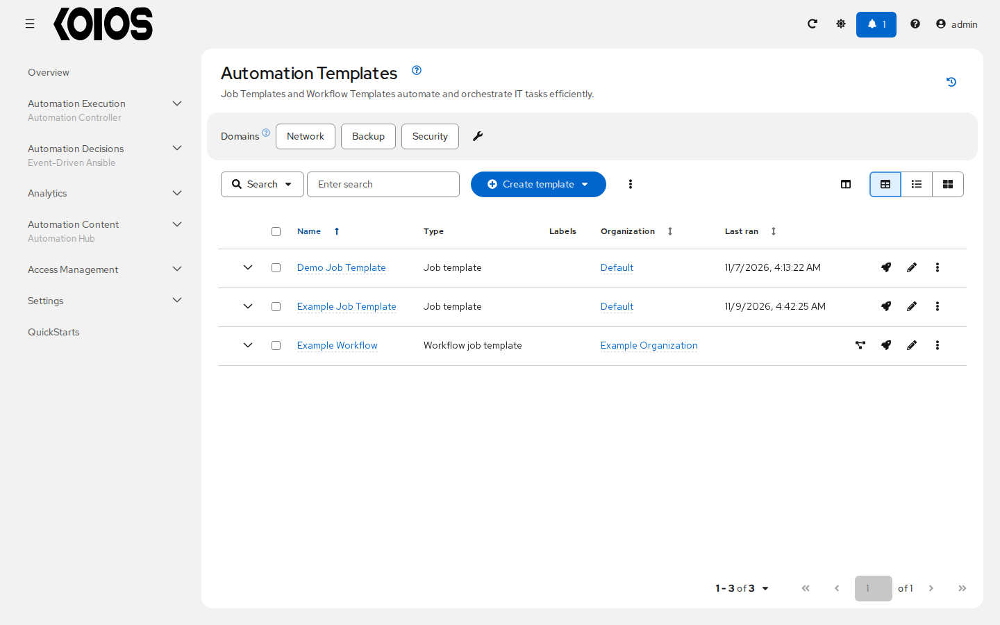
Note
Workflow templates can be used as building blocks for another workflow template. Many parameters in a workflow template allow you to enable Prompt on launch that can be modified at the workflow job template level, and do not affect the values assigned at the individual workflow template level. For instructions, see the Workflow Visualizer section.
22.1. Create a Workflow Template
To create a new workflow job template:
In the Templates list, click Create template and select Create workflow job template.
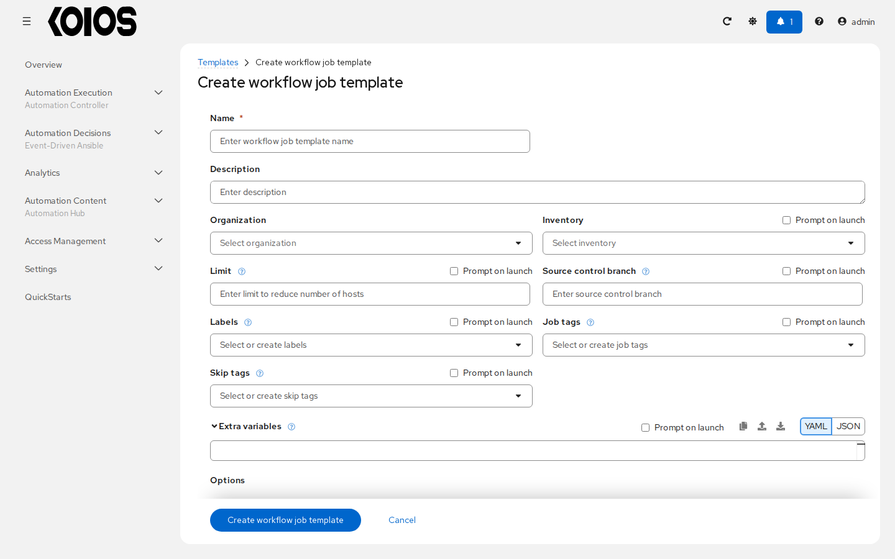
Enter the appropriate details into the following fields:
Note
If a field has the Prompt on launch checkbox selected, launching the workflow template, or when the workflow template is used within another workflow template, it will prompt for the value for that field upon launch. Most prompted values will override any values set in the workflow job template; exceptions are noted below.
Field |
Options |
Prompt on launch |
|---|---|---|
Name |
Enter a name for the workflow job template (required). |
N/A |
Description |
Enter an arbitrary description as appropriate (optional). |
N/A |
Organization |
Choose the organization to be used with this template from the organizations available to the currently logged in user. |
N/A |
Inventory |
Optionally choose the inventory to be used with this template from the inventories available to the currently logged in user. It is used by the nodes that prompt for an inventory. |
Yes |
Limit |
A host pattern to further constrain the list of hosts managed or affected by the playbook. Multiple patterns can be separated by colons ( |
Yes |
Source control branch |
Select a branch for the workflow. This branch is applied to all workflow job template nodes that prompt for a branch. |
Yes |
Labels |
|
|
Job tags |
Type and select or create the tags that specify which parts of the playbooks should be executed. |
Yes |
Skip tags |
Type and select or create the tags of the tasks or parts of the playbooks to skip. |
Yes |
Extra variables |
|
|
For more information about Job tags and Skip tags, refer to Tags in the Ansible documentation.
Options: Specify options for launching this workflow job template, if necessary.
Check Enable webhook to turn on the ability to launch the workflow job template from a GitHub, GitLab or Bitbucket Data Center webhook.
If you enable webhooks, the Webhook details section asks for additional information:
Webhook service: Select which service to listen for webhooks from.
Webhook URL: Automatically populated with the URL for the webhook service to POST requests to.
Webhook key: The shared secret used by the webhook service to sign payloads sent to automation controller. A new key is generated when the template is saved, and you can regenerate it with the button next to the field. Configure it in the webhook settings of the service so that automation controller accepts its webhooks.
Webhook credential: A token credential used to send status updates to the webhook service. For supported providers and configuration, see Working with Webhooks; the credential types and their fields are documented in Credential Types.
For additional information on setting up webhooks, see Working with Webhooks.
Check Enable concurrent jobs to allow simultaneous runs of this workflow. Refer to Automation controller Capacity Determination and Job Impact for additional information.
When you have completed configuring the workflow template, click Create workflow job template. The Workflow Visualizer opens to build the workflow; see Workflow Visualizer.
Later, the template opens in its Details tab, with View workflow visualizer, Launch template and Edit template at the top and the Team Access, User Access, Schedules, Jobs, Survey and, when your permissions allow it, Notifications tabs. Click View workflow visualizer to change the workflow. A workflow cannot be launched until it has at least one node.
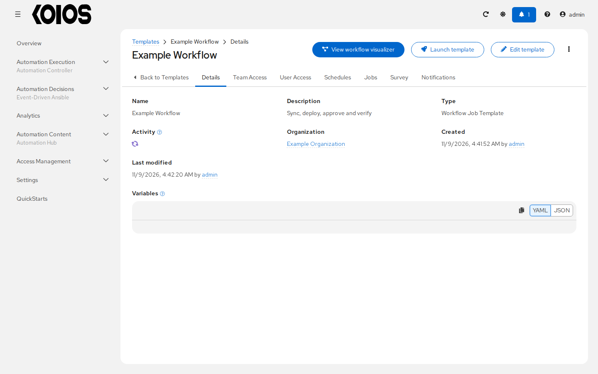
22.2. Work with Permissions
The User Access and Team Access tabs list the users and teams with roles on the workflow job template; Assign users and Assign teams give roles to more of them, such as WorkflowJobTemplate Execute to launch it or WorkflowJobTemplate Approve to approve its approval nodes. Users must exist first; see Users.
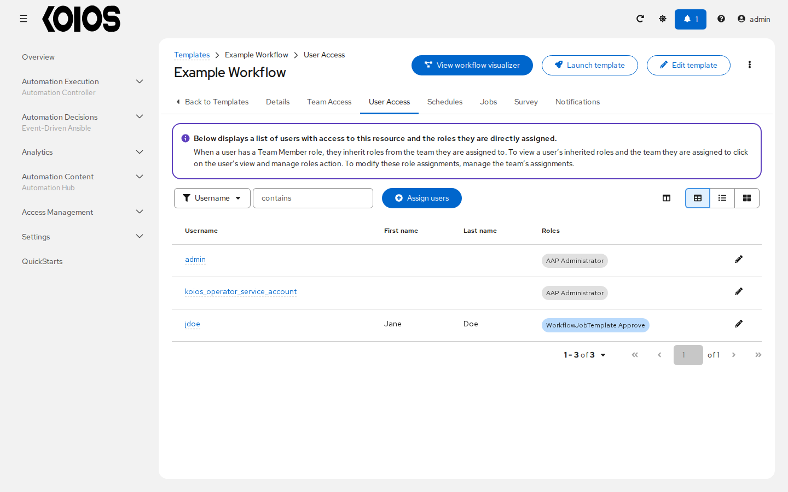
22.3. Work with Notifications
The Notifications tab lists the notifiers you can use with the workflow job template.
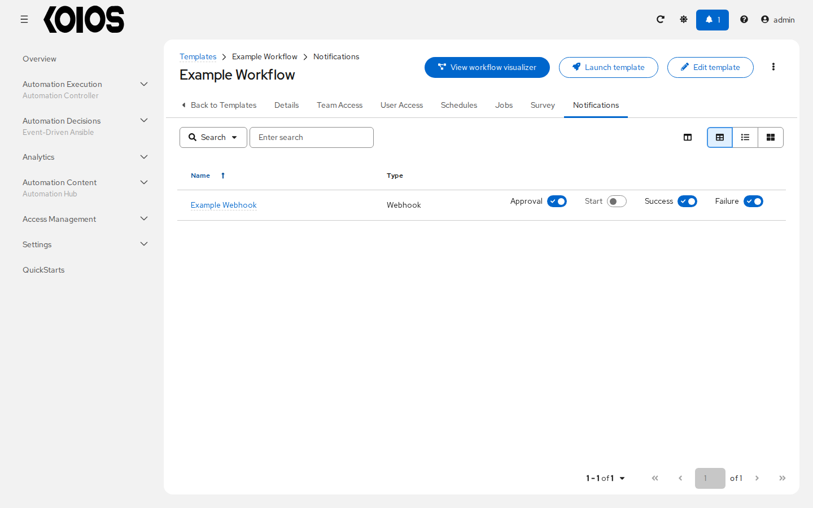
Use the Approval, Start, Success and Failure toggles to enable or disable each notifier for the workflow jobs of this template; Approval notifies when an approval node is waiting, approved, denied or timed out. For more detail, see Enable and Disable Notifications.
If no notifiers have been set up, see Create a Notification Template for detail. Refer to Notification Types for additional details on configuring various notification types.
22.4. View Completed Jobs
The Jobs tab lists the workflow jobs launched from the template. Expand a row to see more details; the row actions cancel a running workflow job or relaunch it.
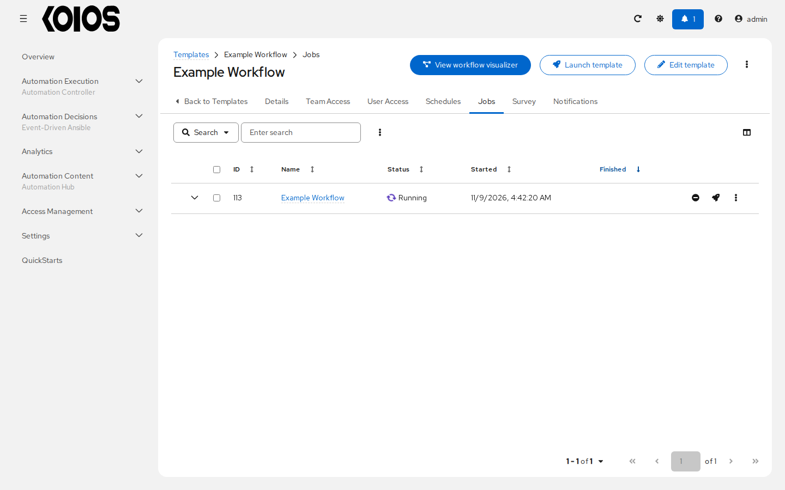
Click a workflow job to see its graphical representation, with the status and elapsed time of each node. The example below shows a workflow job waiting at its approval node.
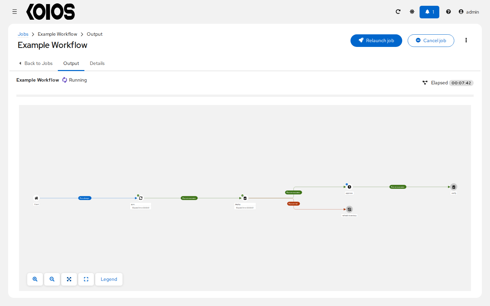
The nodes are marked with icons that help you identify them at a glance. See the legend in the Workflow Visualizer section for more information.
22.5. Work with Schedules
The Schedules tab lists the schedules set up for this template.
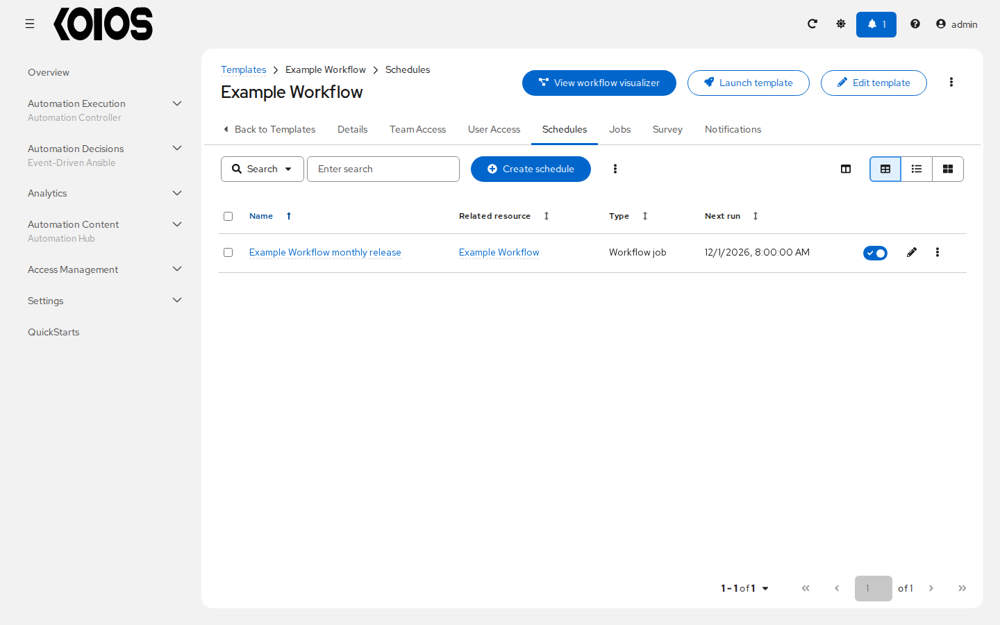
22.5.1. Schedule a Workflow Template
To schedule a workflow job template run, click Create schedule in the Schedules tab. Existing schedules can be edited, enabled or disabled from the same tab. Refer to Schedules for more information.
If the workflow job template prompts for values on launch, such as the inventory, the schedule asks for them too. If it has a survey with required questions, the schedule must answer them.
22.6. Surveys
Workflow job templates provide a way to set up surveys. Surveys set extra variables for the workflow, similar to Prompt on launch for Extra variables, but in a user-friendly question and answer way. Surveys also allow for validation of user input. Click the Survey tab to create a survey.
Use cases for surveys are numerous. An example might be if operations wanted to give developers a “push to stage” button they could run without advanced Ansible knowledge. When launched, this task could prompt for answers to questions such as, “What tag should we release?”
Many types of questions can be asked, including multiple-choice questions.
22.6.1. Create a Survey
To create a survey:
In the Survey tab, click Create survey question.
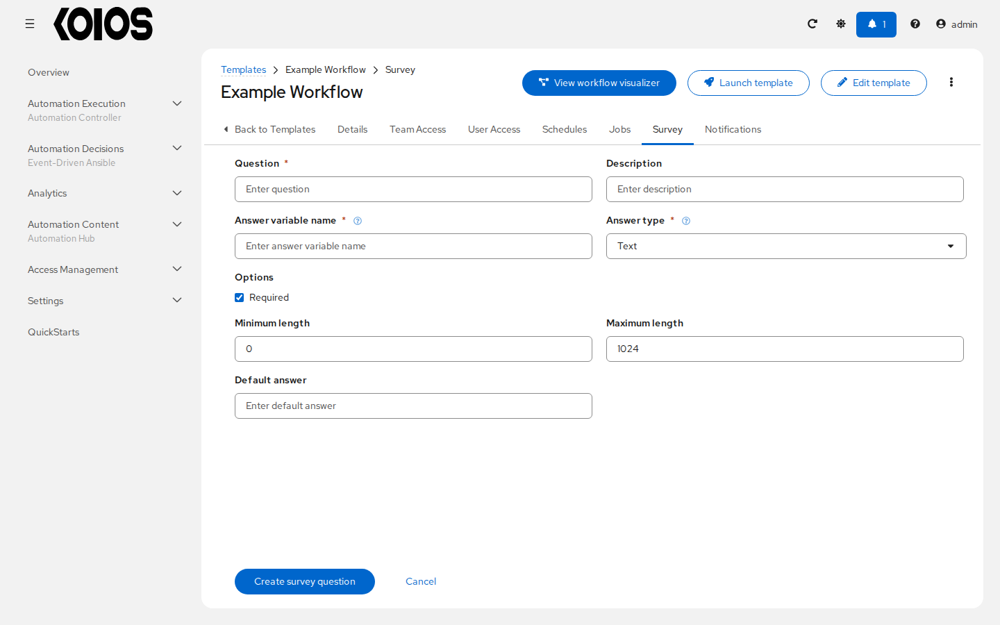
A survey can consist of any number of questions. For each question, enter the following information:
Question: The question to ask the user.
Description: (optional) A description of what’s being asked of the user.
Answer variable name: The Ansible variable name to store the user’s response in. This is the variable to be used by the playbook. Variable names cannot contain spaces.
Answer type: Choose from the following question types.
Text: A single line of text. You can set the minimum and maximum length (in characters) for this answer.
Textarea: A multi-line text field. You can set the minimum and maximum length (in characters) for this answer.
Password: Responses are treated as sensitive information, much like an actual password is treated. You can set the minimum and maximum length (in characters) for this answer.
Multiple Choice (single select): A list of options, of which only one can be selected at a time.
Multiple Choice (multiple select): A list of options, any number of which can be selected at a time.
Integer: An integer number. You can set the minimum and maximum value for this answer.
Float: A decimal number. You can set the minimum and maximum value for this answer.
Required: Whether or not an answer to this question is required from the user.
Default answer: Depending on which type chosen, you can supply the default answer to the question. This value is pre-filled in the interface and is used if the answer is not provided by the user.
Once you have entered the question information, click Create survey question.
The question displays in the Survey tab. Use the Survey enabled switch to enable or disable the survey, the pencil icon to edit a question, and Manage question order and Delete survey questions in the toolbar menu to reorder or delete questions.
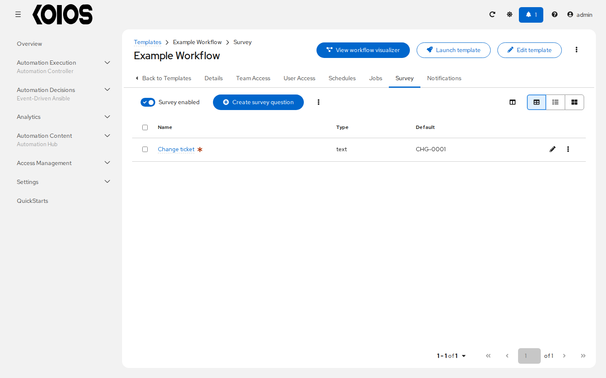
22.6.2. Optional Survey Questions
The Required setting on a survey question determines whether the answer is optional or not for the user interacting with it.
Behind the scenes, optional survey variables can be passed to the playbook in extra_vars, even when they aren’t filled in.
If a non-text variable (input type) is marked as optional, and is not filled in, no survey
extra_varis passed to the playbook.If a text input or text area input is marked as optional, is not filled in, and has a minimum
length > 0, no surveyextra_varis passed to the playbook.If a text input or text area input is marked as optional, is not filled in, and has a minimum
length === 0, that surveyextra_varis passed to the playbook, with the value set to an empty string ( “” ).
22.7. Workflow Visualizer
The Workflow Visualizer provides a graphical way of linking together job templates, workflow templates, project syncs, inventory syncs, approvals and management jobs to build a workflow template. Before building a workflow template, refer to the Workflows section for considerations associated with various scenarios on parent, child, and sibling nodes.
22.7.1. Build a Workflow
Each node (step) is represented by an icon with its alias or name, while the relationships and their run conditions are represented by the lines (links) that connect them. The example below runs a project sync, then a job template; if the job template succeeds, an approval node waits for a user before the last job template, and if it fails, an inventory source sync runs.
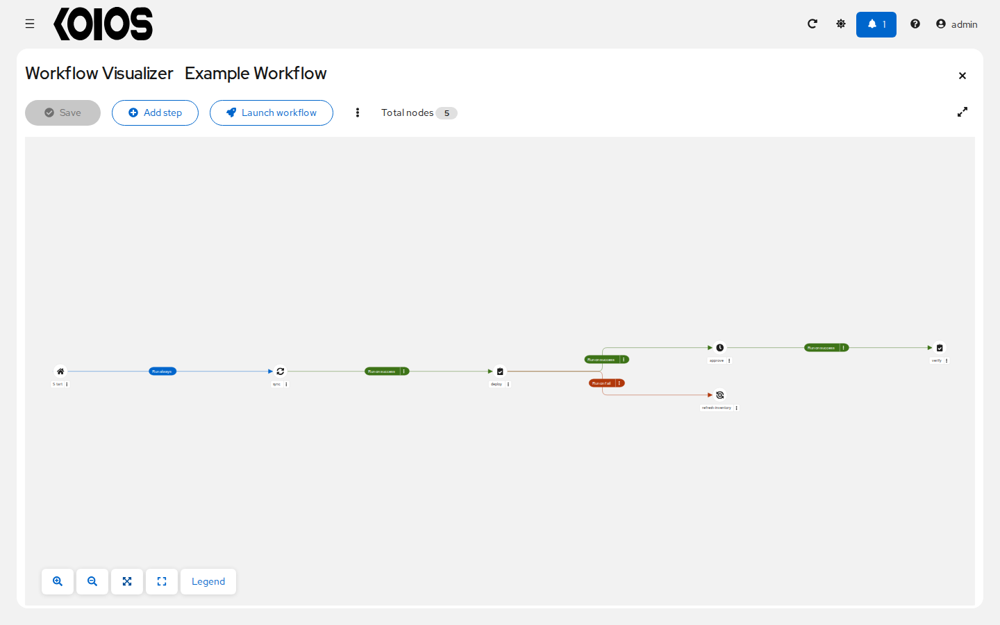
Open the workflow job template and click View workflow visualizer, or click the graph icon in its row of the Templates list.
Click Add step in the toolbar of the visualizer. The Add step wizard opens on the right.
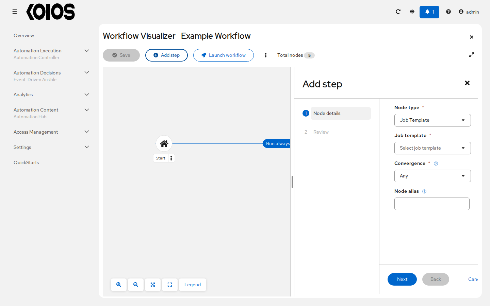
In Node type, select the type of node you want to add: Job Template, Workflow Job Template, Approval, Project Sync, Inventory Source Sync or Management Job.
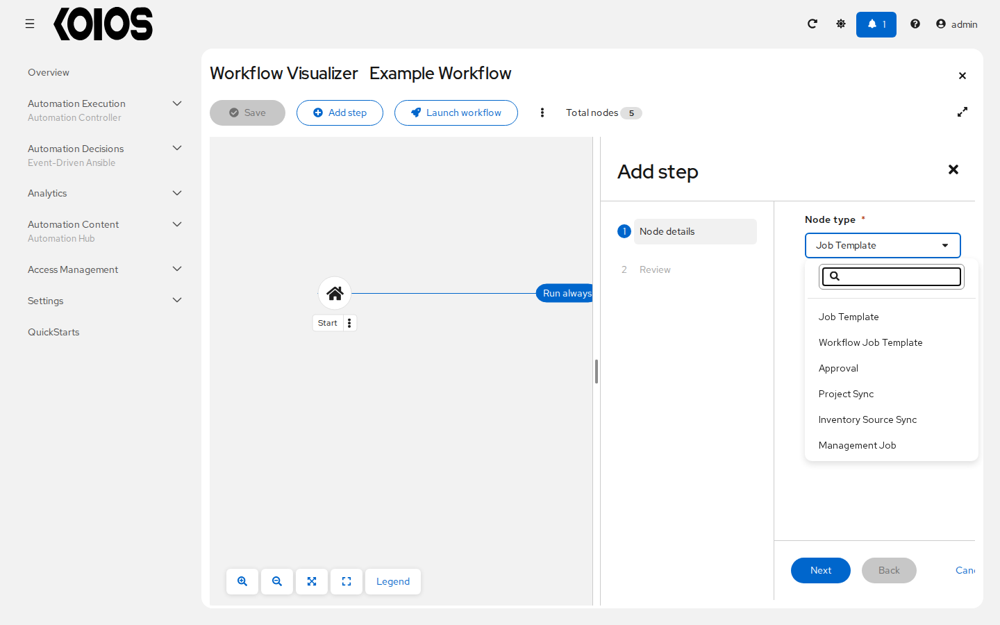
If selecting an Approval node, see Approval nodes for further detail.
Selecting a node type shows the fields associated with it, such as the template, project or inventory source to run.
Note
If you select a job template that does not have a default inventory when populating a workflow graph, the inventory of the parent workflow will be used. Though a credential is not required in a job template, you will not be able to choose a job template for your workflow if it has a credential that requires a password, unless the credential is replaced by a prompted credential.
When the step is added after an existing node (with Add step and link in the menu of that node, see below), select in Status when it runs:
Always run: Execute regardless of the parent node final state.
Run on success: Execute when the parent node results in a successful state.
Run on fail: Execute when the parent node results in a failure state.
Nodes added with Add step in the toolbar, or in the menu of the Start node, are root nodes, which always run when the workflow starts.
Select the behavior of the node if it is a convergent node in the Convergence field:
Any is the default behavior, allowing any of the nodes to complete as specified, before triggering the next converging node. As long as the status of one parent meets one of those run conditions, an ANY child node will run. In other words, an ANY node requires all nodes to complete, but only one node must complete with the expected outcome.
Choose All to ensure that all nodes complete as specified, before converging and triggering the next node. The purpose of ALL nodes is to make sure that every parent met it’s expected outcome in order to run the child node. The workflow checks to make sure every parent behaved as expected in order to run the child node. Otherwise, it will not run the child node.
Note
If a node is a root node, or a node that does not have any nodes converging into it, setting the Convergence rule does not apply, as its behavior is dictated by the action that triggers it.
Optionally enter a Node alias, the name shown for the node in the graph.
Click Next. If a job template or workflow job template used in the node has Prompt on launch selected for any of its parameters, the Prompts step lets you set those values for this node, and the Survey step asks for its survey answers. Review the node in the Review step and click Finish.
Likewise, if a workflow template used in the workflow has Prompt on launch selected for the inventory option, supply the inventory in the Prompts step. If the parent workflow has its own inventory, it will override any inventory that is supplied here.
Note
For templates with promptable fields that are required, but do not have a default, you must provide those values when creating a node. The two cases are: 1) when you select the Prompt on launch checkbox in a template, but do not provide a default, or 2) when you create a survey question that is required but do not provide a default answer. However, this is NOT the case with credentials. Credentials that require a password on launch are not permitted when creating a workflow node, since everything needed to launch the node must be provided when the node is created. So, if a template prompts for credentials, automation controller prevents you from being able to select a credential that requires a password.
Once the node is created, it is shown with the icon of its node type. A template that is associated with each workflow node will run based on the selected run scenario as it proceeds. Click Legend at the bottom of the visualizer to display the meaning of each icon and color.
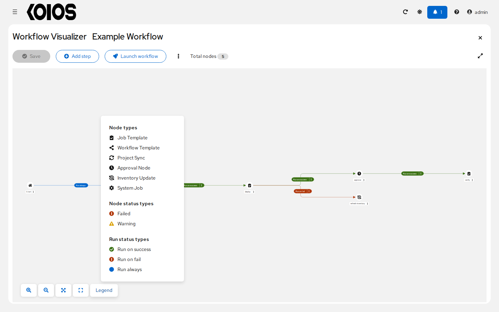
The menu (⋮) next to the name of each node has Edit step, Add step and link (a new step that runs after it) and Remove step; the menu of the Start node has Add step. The menu of each link sets its run condition (Run on success, Run always or Run on fail) or removes it with Remove link.
When done with building your workflow template, click Save in the toolbar of the visualizer. Launch workflow launches it once saved.
Important
Closing the Workflow Visualizer with unsaved changes asks whether to Save and exit or Exit without saving; changes that are not saved are lost.
The buttons at the bottom of the visualizer zoom in and out, fit the workflow to the screen and reset the view. You can also drag the workflow diagram to reposition it on the screen or use the scroll on your mouse to zoom.
22.7.1.1. Approval nodes
Choosing an Approval node requires user intervention in order to advance the workflow. This functions as a means to pause the workflow in between playbooks so that a user can give approval to continue on to the next playbook in the workflow, giving the user a specified amount of time to intervene, but also allows the user to continue as quickly as possible without having to wait on some other trigger.
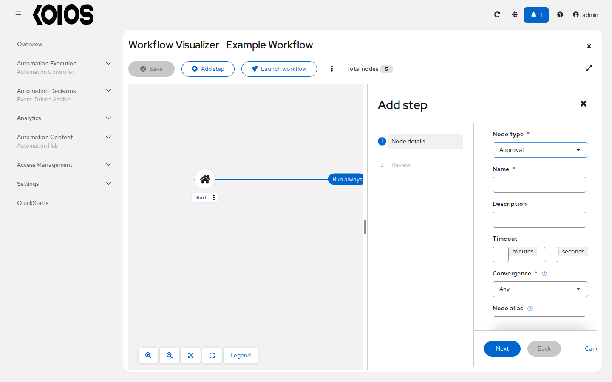
An approval node needs a Name, and optionally a Description and a Timeout in minutes and seconds. The default for the timeout is none, but you can specify the length of time before the request expires and automatically gets denied. The node displays on the graphical view with a clock icon.
Pending approvals are listed in Automation Execution > Administration > Workflow Approvals, with the time left before they expire; they also appear as notifications in the panel of the bell at the top of the page (its counter shows the unread notifications, not the pending approvals). Select them and click Approve or Deny, or use the actions of each row.
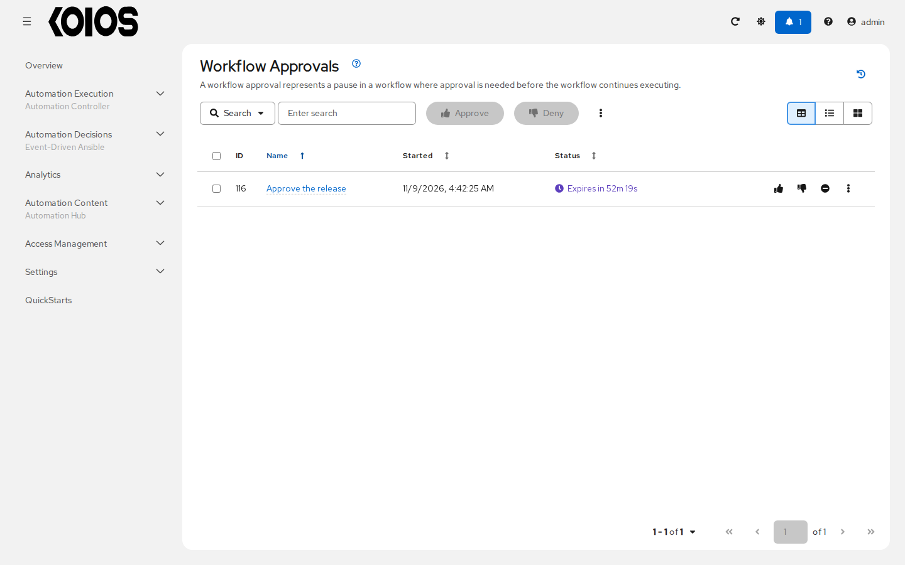
Launching the workflow does not grant the right to approve its nodes. The approvers are:
system administrators
the administrators of the workflow job template, and the users with the Organization WorkflowJobTemplate Admin role
the administrators of the organization of the workflow job template
the users with the WorkflowJobTemplate Approve role on the workflow job template, or the Organization Approval role on its organization
Users who can see the workflow job template can see its approvals.
If pending approval nodes are not approved within the specified time limit (if an expiration was assigned) or they are denied, then they are marked as “timed out” or “failed”, respectively, and move on to the next “on fail node” or “always node”. If approved, the “on success” path is taken. If you try to POST in the API to a node that has already been approved, denied or timed out, an error message notifies you that this action is redundant, and no further steps will be taken.
22.7.1.2. Node building scenarios
To add a node that runs after another one, open the menu of the parent node and click Add step and link. Adding several steps to the same parent creates sibling nodes, which run in parallel.
To add another root node, which depicts a split scenario from the start, click Add step in the toolbar.
To link two existing nodes, drag the connector that appears when you hover over the parent node onto the child node, and set the run condition of the new link in its menu.
To change the run condition of a link, open the menu of the link and select Run on success, Run always or Run on fail.
To remove a link, open the menu of the link and click Remove link.
To edit a node, open its menu and click Edit step; to delete it, click Remove step.
Note
When you remove a node, its child nodes are linked to its parent nodes and keep the run condition of their link, with two exceptions: if a link between the parent and the child already exists, it keeps the condition of that link, and if the new parent is Start, the link becomes Run always. Check the run conditions after removing nodes.
Note
When adding a new node, the Prompts and Survey steps apply to workflow templates as well. Workflow templates will prompt for inventory and surveys.
Remember to refer to the Legend to identify the meaning of the symbols and colors associated with the graphical depiction.
22.8. Launch a Workflow Template
Launch a workflow template by any of the following ways:
In the Templates list, click Launch template (rocket icon) in the row of the workflow job template.
In the workflow job template, click Launch template.
In the Workflow Visualizer, click Launch workflow.
If the template prompts for values or has a survey, the launch wizard asks for them before launching. Along with any extra variables set in the workflow job template and survey, automation controller automatically adds the same job variables as those added for a job template upon launch (see the job variables). Automation controller then opens the output of the workflow job, displaying the progress and the results.
Events related to approvals on workflows display in the Activity Stream with detailed information about the approval requests, if any.
22.9. Copy a Workflow Template
Automation controller allows you the ability to copy a workflow template. If you choose to copy a workflow template, it does not copy any associated schedule, notifications, or permissions. Schedules and notifications must be recreated by the user or admin creating the copy of the workflow template. The user copying the workflow template will be granted the admin permission, but no permissions are assigned (copied) to the workflow template.
In the Templates list, open the row menu of the workflow job template you want to copy and click Duplicate template.
The new template, named after the original one with a timestamp, displays in the list of templates.
Click the new template, click Edit template and replace the contents of the Name field with a new name, and provide or modify the entries in the other fields to complete this template.
Click Save workflow job template when done.
Note
If a resource has a related resource that you don’t have the right level of permission to, you cannot copy the resource, such as in the case where a project uses a credential that a current user only has Read access. However, for a workflow template, if any of its nodes uses an unauthorized job template, inventory, or credential, the workflow template can still be copied. But in the copied workflow template, the corresponding fields in the workflow template node will be absent.
22.10. Extra Variables
Note
extra_vars passed to the job launch API are only honored if one of the following is true:
They correspond to variables in an enabled survey
ask_variables_on_launchis set to True
When you pass survey variables, they are passed as extra variables (extra_vars). This can be tricky, as passing extra variables to a workflow template (as you would do with a survey) can override other variables being passed from the inventory and project.
For example, say that you have a defined variable for an inventory for debug = true. It is entirely possible that this variable, debug = true, can be overridden in a workflow template survey, because extra_vars have the highest precedence over inventory, group and host variables.
Within extra_vars, the values given at launch (prompted extra variables and survey answers) override the defaults of the template and of the survey. A survey question therefore does not protect a variable: to keep a value fixed, define it only in the template’s Extra variables and do not prompt for it nor ask for it in the survey.
For a job template launched by a workflow, the extra variables of the job are combined in this order, where later ones override earlier ones with the same name:
the extra variables of the job template, as in Extra Variables;
the extra variables prompted in the workflow node;
the artifacts of the previous jobs in the workflow (the variables they set with
set_stats);the extra variables of the workflow job: those of the workflow job template, then the answers of its survey (including default values), then the extra variables given at launch.